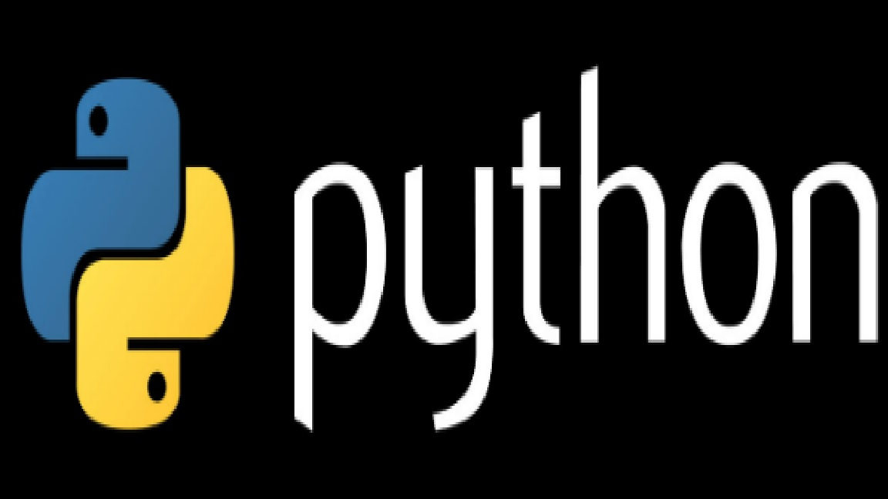

Tämän sivun kuvaus:
Tässä sivussa on käytetty html koodia, joka on kirjoitettu Visual studio codella. Tyyli on tehty css tiedostoon. Nettisivulla oleva teksti mukautuu kun avattua selaimen ikkunaa suurentaa, tai pienentää. Kun sivua tarpeeksi pienentää, niin sivu palkki katoaa kokonaan.

Tausta kuvana on käytetty tämän sivun koodia
Python on tietokoneohjelmointikieli, jota käytetään usein
verkkosivustojen ja ohjelmistojen rakentamiseen, tehtävien
automatisointiin ja tietojen analysointiin. Python on yleiskäyttöinen
kieli, mikä tarkoittaa, että sitä voidaan käyttää useiden eri
ohjelmien luomiseen, eikä se ole erikoistunut erityisiin ongelmiin.
HTML ei ole ohjelmointikieli. Se on merkintäkieli.
HTML (HyperText Markup Language) on standardoitu merkintäkieli, jota käytetään verkkosivujen rakentamiseen. HTML-koodi määrittelee sivun rakenteen, tyylin ja sisällön. HTML-koodi koostuu sarjasta elementtejä, joista jokaisella on oma merkintänsä. Elementit voivat olla tekstiä, kuvia, linkkejä, painikkeita, lomakkeita tai muita verkkosivun osia.
HTML:ää käytetään yhdessä muiden verkkoteknologioiden kanssa, kuten CSS (Cascading Style Sheets) ja JavaScript, jotta voidaan luoda monipuolisia ja interaktiivisia verkkosivuja. HTML on erittäin tärkeä kieli verkkosivujen rakentamisessa ja se on yksi peruskivistä modernin verkkokehityksen maailmassa.